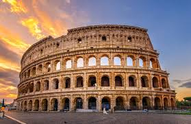

I had the privlege to travel to visit different cities in Italy and Europe.
If I had to choose the first 3 best cities I visited in Italy, then I go with:
-
Florence
Italian Firenze , Latin Florentia, city, capital of Firenze provincia (province) and Toscana (Tuscany) regione (region), central Italy. The city, located about 145 miles (230 km) northwest of Rome, is surrounded by gently rolling hills that are covered with villas and farms, vineyards, and orchards. Florence was founded as a Roman military colony about the 1st century BCE, and during its long history it has been a republic, a seat of the duchy of Tuscany, and a capital (1865–70) of Italy. In Florence you can see places like the Florence Cathedral, Pitti Palace, Bololi gardens, michealangelo's David statue, Loggia dei Lanzi statues etc. -
Rome
Italian Roma , historic city and capital of Roma provincia (province ), of Lazio region, and of the country of Italy. Rome is located in the central portion of the Italian peninsula, on the Tiber River about 15 miles (24 km) inland from the Tyrrhenian Sea. Once the capital of an ancient republic and empire whose armies and polity defined the Western world in antiquity and left seemingly indelible imprints thereafter, the spiritual and physical seat of the Roman Catholic Church, and the site of major pinnacles of artistic and intellectual achievement, Rome is the Eternal City, remaining today a political capital, a religious centre, and a memorial to the creative imagination of the past. You can visit places like the colosseum, Roman Forum, The Pantheon, Vatican city etc....

-
Naples
Italian Napoli, a city in southern Italy, sits on the Bay of Naples. Nearby is Mount Vesuvius, the still-active volcano that destroyed nearby Roman town Pompeii. Dating to the 2nd millennium B.C., Naples has centuries of important art and architecture. The city's cathedral, the Duomo di San Gennaro, is filled with frescoes. Other major landmarks include the lavish Royal Palace and Castel Nuovo, a 13th-century castle.